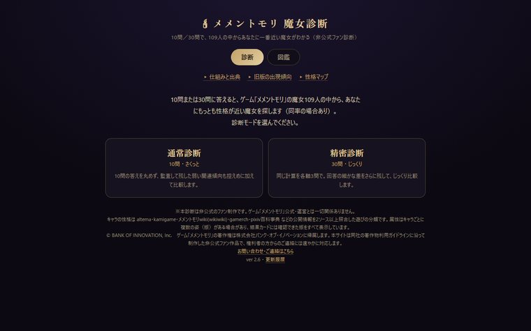

公開中

メメントモリ 魔女診断
Web（非公式ファン作品）
10問または30問に答えると、ゲーム「メメントモリ」の魔女109人から性格が一番近い魔女がわかる診断。全員の性格を10軸のレーダーで見比べられる図鑑つき。
109人 × 10軸で性格を数値化
設計と制作のはなし
- 答えを10軸の性格の値に足していき、109人の中で一番「距離」が近い魔女を返す仕組み。
- キャラの性格は、公開されている情報を2つ以上の出典で照合してから数値にした。
- 10問版の答え方の全パターン（約105万通り）を総当たりして、どの魔女にもたどり着けるかを確かめた。
最初から設問が見えてるのが違和感
レーダーだけだと何が何だか
——自分で使って引っかかったところを直しながら、版を重ねた。